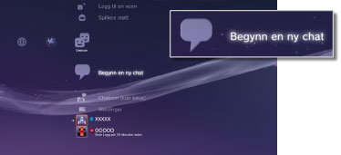
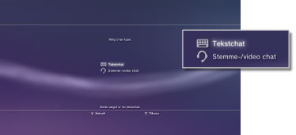

Starte eller avslutte tekstchat
For å bruke denne funksjonen, må du oppdatere systemprogramvaren.
Du kan tekstchatte med folk i vennelisten din.
Starte tekstchat
1. |
Velg |
|---|---|
|
 |
|
2. |
Velg |
|
 |
|
3. |
Skriv et navn for tekstchatterommet, og velg deretter [OK]. |
4. |
Velg vennene som du vil invitere til chatten, og velg [OK]. |
|
|
 (Begynn en ny chat).
(Begynn en ny chat). (Tekstchat).
(Tekstchat).
Tips
- Du må logge på PlayStation®Network for å kunne bli med i en tekstchat.
- En chatinvitasjon sendes ikke for tekstchat.
- Opptil 16 personer kan bli med i et tekstchatterom.
- Tekstchat kan ikke brukes hvis bruk av denne funksjonen er begrenset under PlayStation®Network-kontoinnstillingene. For informasjon om innstillinger for foreldrekontroll, se [Om XMB™] > [Bruke foreldrekontroll-innstillingene] i denne veiledningen.
Bli med i et tekstchatterom
Hvis du blir invitert til en tekstchat, vises en melding i øvre høyre hjørne av skjermen. Velg  (Chatrom (kun tekst)) under
(Chatrom (kun tekst)) under  (Venner), og velg chatterommet som du vil bli med i.
(Venner), og velg chatterommet som du vil bli med i.
Tips
- Hvis [Ikke Vis] er angitt i [Meldinger] under
 (Innstillinger) >
(Innstillinger) >  (Systeminnstilling), vises ikke en melding.
(Systeminnstilling), vises ikke en melding. - I de fleste spill kan du bli med i en tekstchat mens du spiller. Trykk på PS-knappen på den trådløse kontrolleren, og velg deretter chatterommet som du vil bli med under (Venner) > (Chatrom (kun tekst)). Trykk på PS-knappen for å gå tilbake til spilleskjermen.
- Du kan bli med i opptil tre chatterom samtidig. Hvis du blir med i et fjerde chatterom, forlater du automatisk det første chatrommet som du ble med i.
- Opptil 20 chatterom vises i (Chatrom (kun tekst)). Når det er over 20 chatterom, slettes de eldste chatrommene automatisk etter hvert som nye rom åpnes.
Forlate et chatterom
Trykk på  -knappen for å lukke tekstchat-skjermen. Velg chatterommet som du vil forlate, trykk på
-knappen for å lukke tekstchat-skjermen. Velg chatterommet som du vil forlate, trykk på  -knappen, og velg deretter [Forlate] fra innstillingsmenyen.
-knappen, og velg deretter [Forlate] fra innstillingsmenyen.
Tips
Hvis du slår av PS3™-systemet eller logger av fra PlayStation®Network, forlater du chatterommet automatisk. Hvis du blir med i et chatterom igjen etter at du har forlatt det, vil du ikke se hva som foregikk mens du var borte.
Slette et chatterom
Velg chatterommet som du vil slette, trykk på -knappen, og velg deretter [Slett] fra innstillingsmenyen.
Bruke kontrollpanelet
Du kan utføre følgende handlinger med kontrollpanelet på tekstchat-skjermen.
 |
Inviter en venn | Invitere en venn til et tekstchatterom |
|---|---|---|
 |
Deltakerliste | Se en liste over folk som deltar i chatterommet |